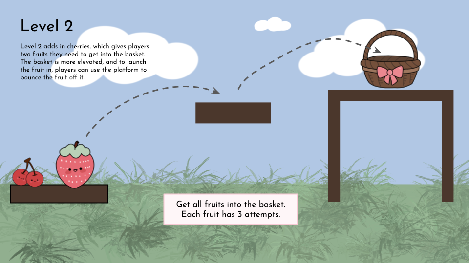
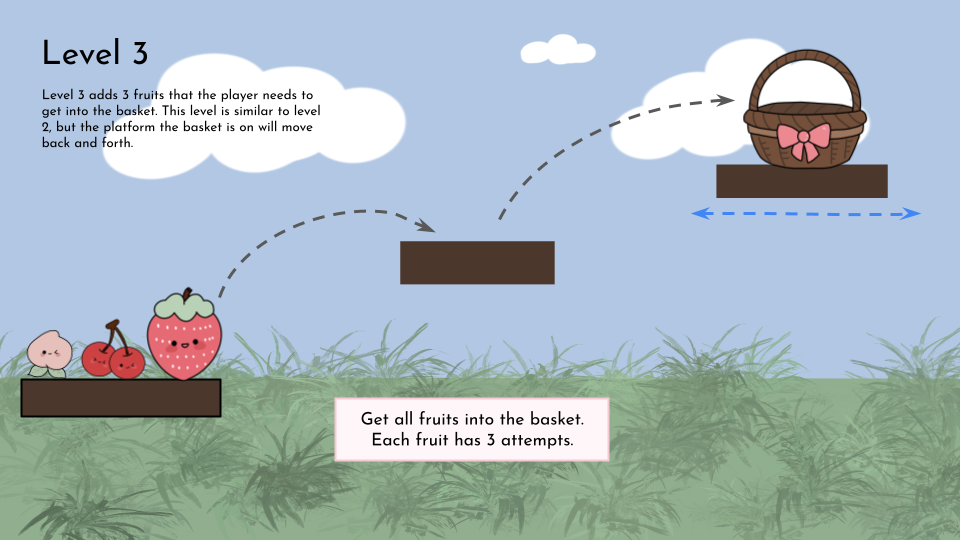

Fruit Blast
A physics-based game inspired by Angry Birds.


- Genre
- Physics-Based Interactive
- Tools
- Phaser 4
- Team
- Solo project
- Role
- Programmer, Artist
overview
Fruit Blast is a physics-based game built in Phaser 4. Players drag and aim a fruit within a permitted area, then release it to launch it toward a basket. The drag input updates the fruit and aim arrow in real time, and after release, gravity, bounce, and drag decide where the fruit ends up.
gameplay video
design process
1. Prototype/Initial Ideas
Angry Birds was the main inspiration for the game, with the goal of creating a similar physics experience in Phaser 4. Using Angry Birds as a reference, provided a starting point for the physics interactions and I was able to find tutorials on how to implement the drag and launch mechanism for the fruits.
The prototype was created on Google Slides, and it used original game art created on Procreate. The same game assets were used in the prototype and the final demo. The prototype was used to plan out what actions the player could take, and how the game would respond to those actions. Later on, the prototype was implemented in Phaser 4, with the drag mechanic and physics engine added to create a playable version of the game.

2. Playtesting & changes
Playtesting helped identify several issues with the game’s physics and progression system. An example is that the fruit would fail to respawn after missing the basket because small amounts of residual movement prevented the game from registering that the fruit had stopped. To address this, I adjusted the respawn logic to account for minor movement and ensure that fruit reliably resets after a missed shot.
more about the testing
In addition to improving fruit respawn behavior after missed shots, I tested the aiming and launching controls, basket collision detection, and interactions with moving platforms. I also checked that attempts and scores updated correctly and that restarting the game reset the level state as expected. These tests helped make the gameplay more consistent and reliable.

what i did
- Developed the fruit-launching mechanic using Phaser’s drag-and-release controls and physics.
- Implemented level progression, including transitions between gameplay, instructions, and summary screens.
- Created and refined gameplay elements such as basket catches, moving platforms, and scoring.
- Playtested the game and improved gameplay.
- Created game assets using Procreate.
what i learned
- How to use drag-and-release input and Arcade Physics collisions to decide whether a shot succeeded.
- How to build a complete solo experience that feels natural and responsive to input.
- Playtesting showed gaps between what players expected and what happened, and adjusting the physics states made the game more intuitive.